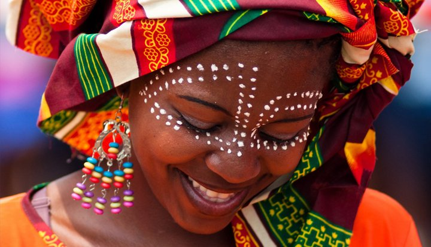
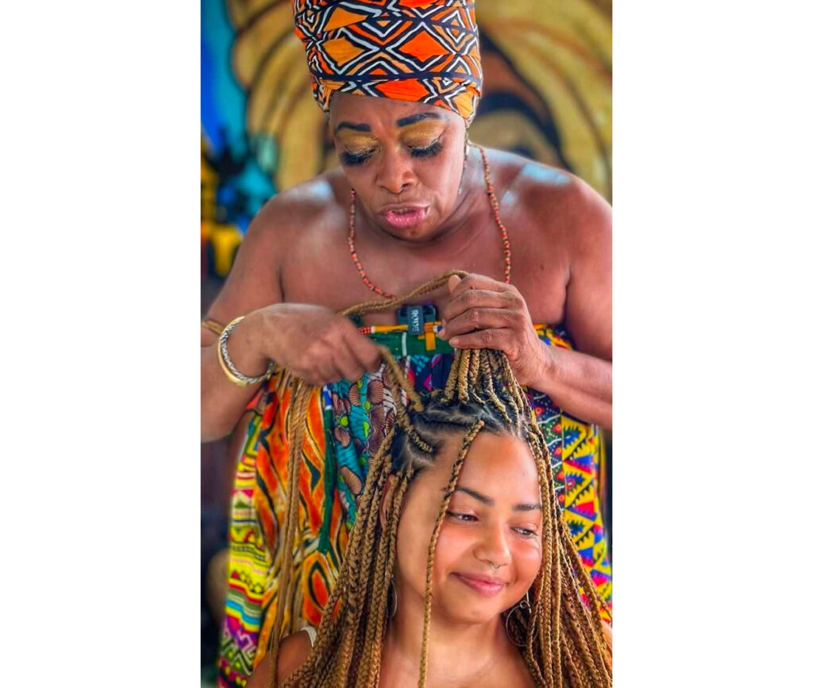
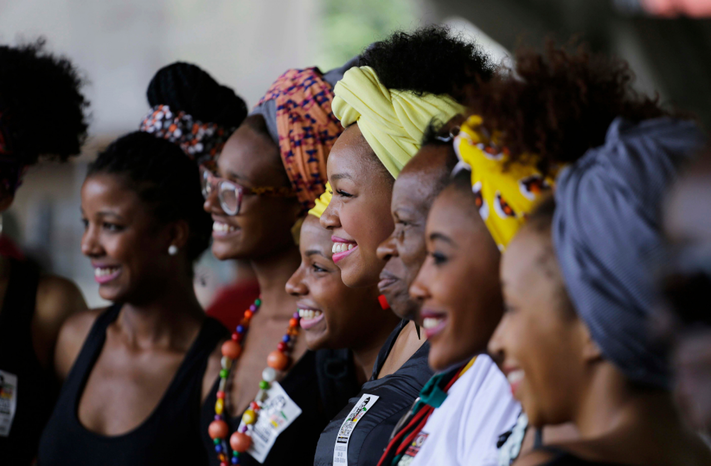
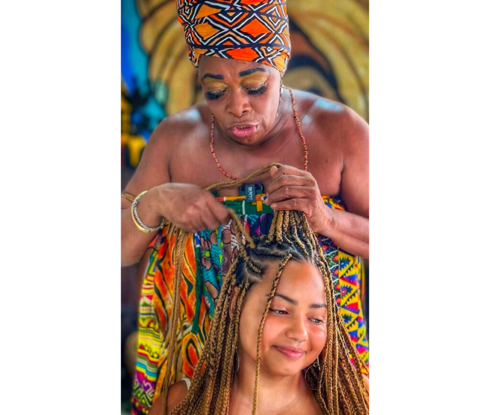
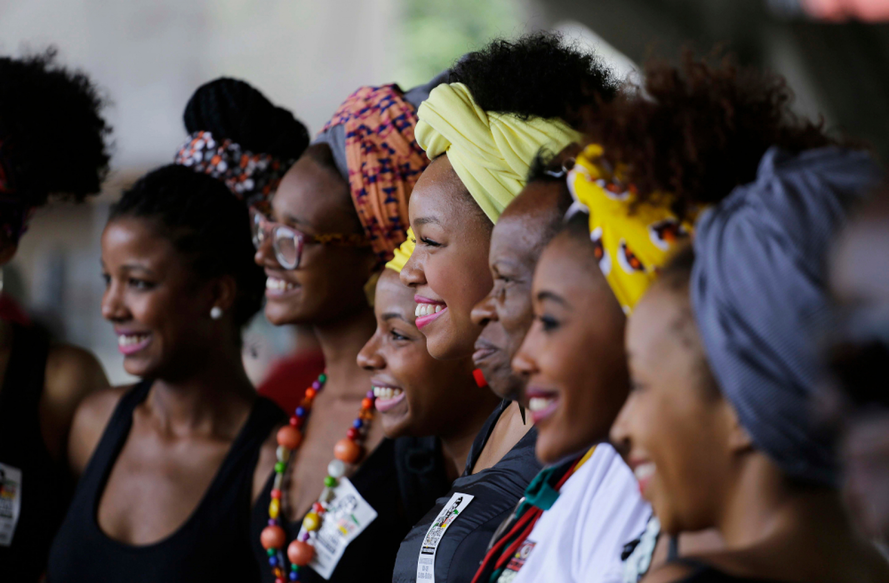
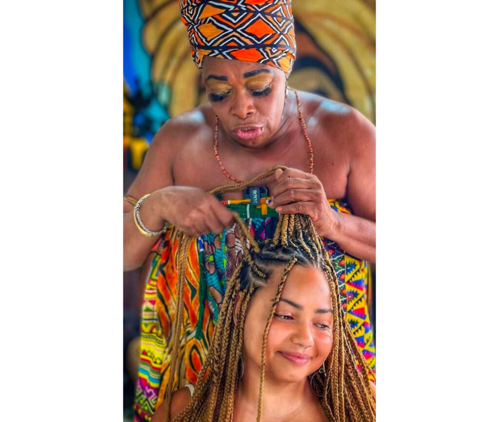
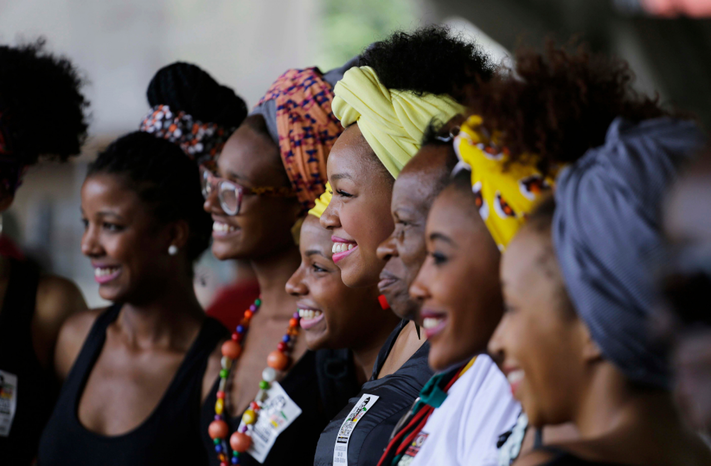

Galeria de Cultura Negra
A cultura negra no Brasil é marcada pela resistência, pela força de seus povos e pela riqueza de suas tradições. Ela se expressa de várias formas: através da música, dança, religiosidade, culinária, e também na luta por igualdade e direitos.
Esta galeria reúne imagens que celebram e valorizam a contribuição histórica e cultural dos afro-brasileiros. Ao mesmo tempo, busca destacar a importância da preservação da memória e da luta contra o racismo estrutural.


 




